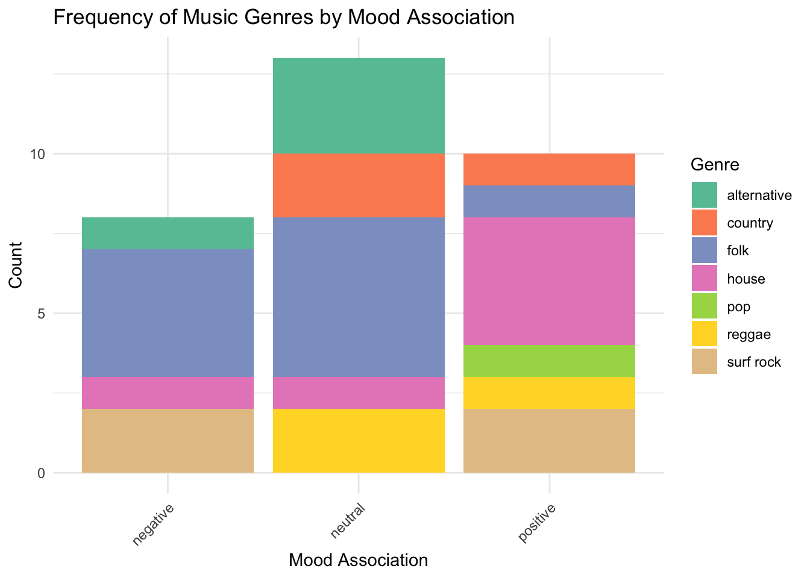

library(tidyverse)
library(here)
library(flextable)
library(janitor)
library(readxl)
library(lubridate)
library(tidyr)
library(dplyr)
library(ggplot2)ENVS 193DS Homework 03
repository: https://github.com/annacote2026/ENVS-193DS_homework-03
1. Personal Data
a.
[I could calculate the frequency of each music genre for each given mood association (positive, negative, and neutral) by counting, because I listen to folk music often when I study, so I think the count for times I have listened to folk music while I’m feeling “neutral” (like focused or tired) will be higher than while I’m feeling “negatively”.]
b.
personal_data <- read_csv("../data/193DS_Personal_Data.csv") |> # reading in my personal data frame and cleaning it
clean_names()genre_mood_freq <- personal_data |> # creating a new object called genre_mood_freq
count(genre, mood_association)
# count occurrences of genre and mood association
ggplot(genre_mood_freq,
aes(x = mood_association,
y = n,
fill = genre)) + # assigning variables
geom_bar(stat = "identity") + # telling R to use y-values I supply directly
labs(
title = "Frequency of Music Genres by Mood Association",
x = "Mood Association",
y = "Count",
fill = "Genre" # rename axes, title, and legend
) +
theme_minimal() +
scale_fill_brewer(palette = "Set2") + # choosing a new color palette for the bar chart
theme(axis.text.x = element_text(angle = 45, hjust = 1)) # angling the x-axis labels to be more readable
c.
[Figure 1. Comparison of the frequency that I listen to different music genres between negative, neutral, and positive mood associations, which were self-determined based on my emotions at the time of listening. Stacked bar chart shows individual counts of times listened to each genre during each mood association, as well as total count of times listened to music during each mood association. Folk music exhibited the highest overall listening frequency, and was also the most listened to genre during “negative” and “neutral” moods, whereas house music was the most listened to genre during “positive” moods. Data collected and recorded in personal music listening log (193DS_Personal_Data.xlsx).]
d.
ft <- genre_mood_freq |> # making a new object called "ft"
select(genre, mood_association, n) # selecting only these columns
flextable(ft) |> # creating a flextable from the new object "ft" created
set_caption("Count of Music Genres by Mood") |> # setting a caption for the table
set_header_labels(values = list( # relabeling column headers for readability
genre = "Genre",
mood_association = "Mood Association",
n = "Frequency")) |>
theme_box() |>
set_table_properties(align = "center",
layout = "autofit") # centering the table on the page/output and autofitting the layout of itGenre | Mood Association | Frequency |
|---|---|---|
alternative | negative | 1 |
alternative | neutral | 3 |
country | neutral | 2 |
country | positive | 1 |
folk | negative | 4 |
folk | neutral | 5 |
folk | positive | 1 |
house | negative | 1 |
house | neutral | 1 |
house | positive | 4 |
pop | positive | 1 |
reggae | neutral | 2 |
reggae | positive | 1 |
surf rock | negative | 2 |
surf rock | positive | 2 |
2. Affective visualization
a.
[Using the Dear Data project by Giorgi Lupi and Stefanie Posavec as inspiration, I think an affective data visualization for my personal data could look like creating a unique symbol for each data point that encompasses each column and is organized by date and time. Since my data includes music genre I could make each data point be a music note and change certain aspects of the music note to represent the information pertaining to that day of listening, which includes genre, mood, mood association, if I was listening with people, method of listening, selection of music, and if it was a playlist or not. Each music note’s position on the graph would be dictated by the date and time that the data was recorded, with moving downwards corresponding to an later date, and moving right corresponding to a later time. Additionally, I would include a legend that describes how to interpret my data visualization depending on the characteristics of the music notes.]